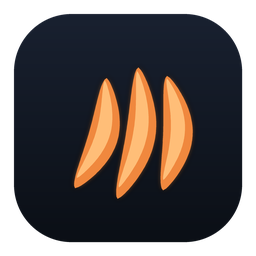

Connect to your CheetahClaws server to start chatting from your phone.
Run cheetahclaws --web on your machine and expose it over HTTPS,
e.g. cloudflared tunnel --url http://localhost:8080, then paste
the https://… URL above. First connection lets you register an
admin account.